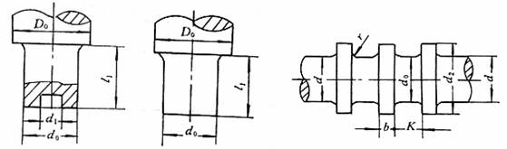

|
 |
|||||
|
代号 |
名 称 |
说 明 |
代号 |
名 称 |
说 明 |
|
D0 |
轴直径 |
计算确定 |
b |
轴环宽度 |
b＝（0.1～0.15）d |
|
d |
轴直径 |
计算确定 |
K |
轴环距离 |
K＝（2-3）b |
|
d0 |
止推轴颈直颈 |
计算确定 |
l1 |
止推轴颈长度 |
由计算和推力轴承结构确定 |
|
d1 |
空心轴颈内颈 |
d1=（0.4～0.6）d0 |
n |
轴环数 |
n≥1由计算和推力轴承结构确定 |
|
d2 |
轴环外颈 |
d2=（1.2～1.6）d |
r |
轴环根部圆角半径 |
按标准GB/T 6403.4-1986选取 |